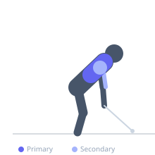
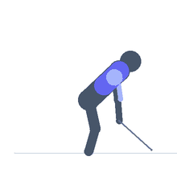

Exercise guide / Single-Arm Cable High Row — Dual Crossover
Single-Arm Cable High Row — Dual Crossover
A single-arm back row performed from a high-pulley dual cable crossover station. With one cable set to the highest position, the exerciser rows downward and inward in a diagonal arc, pulling the handle from an elevated position (above and to the side) toward the hip. This diagonal downward pull engages the latissimus dorsi through its full functional range — from shoulder flexion to extension — with an unusually long range of motion compared to standard lat pulldowns or rows. The unilateral setup allows each side to be trained independently, correcting asymmetries, while the high cable angle specifically targets the lower fibers of the latissimus dorsi.
Primary muscles
latissimus dorsi
Secondary muscles
trapezius lower
rhomboid major
biceps brachii long head
deltoid posterior
Stabilizers
erector spinae
internal oblique
Equipment
Cable Machine (Dual Pulley / Functional Trainer)


Starting position
- Set one side of a dual cable crossover to the highest pulley position. Stand perpendicular to or slightly angled away from the working cable, with the working arm extended upward and to the side toward the pulley. The arm is in a fully stretched overhead position.
Setup
- Use a D-handle or rope attachment. The body position is key: face away at a slight angle so the arm reaches up and across toward the pulley in the starting stretched position.
Steps
- Step 1: Stand with the working arm extended high toward the pulley, feeling the lat stretch.
- Step 2: Row downward and inward, driving the elbow toward the hip on the same side.
- Step 3: At the end position, the elbow is at or below hip height and the lat is fully contracted.
- Step 4: Slowly return the arm to the overhead stretched position. Complete all reps, then switch sides.
Coaching cues
- Feel the lat stretch at the top — this is the unique advantage of the high cable angle
- Drive the elbow toward the hip, not the hand
- Think of pulling your elbow into your back pocket at the bottom of the rep
Breathing
- Exhale as you row downward. Inhale as you return to the stretched position.
Range of motion
- From full overhead arm extension (lat in a stretched position) to elbow at or below hip (lat fully contracted).
Tempo
- 1s initiation, 2s controlled pull, 2s hold at bottom, 4s slow return to full stretch.
Common mistakes
- Using the biceps to pull rather than initiating the movement with the lat
- Not fully extending the arm at the top — the stretch position is a key part of the exercise
- Leaning the torso excessively to gain range — keep the torso relatively stable
Safety
- The overhead starting position should feel like a lat stretch, not a shoulder impingement — adjust body angle if the shoulder is uncomfortable
- Avoid excessive weight that causes the torso to collapse toward the cable on the return
Training
- hypertrophy: 10–15 reps
- hypertrophy: 3–4 sets
- Rest: {'hypertrophy': 75}